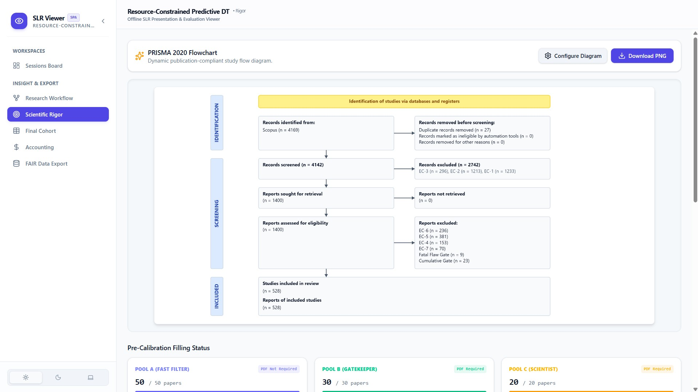

Systematic Literature Reviews
Automated with Absolute Rigor
SLR Magic combines stateful 4-stage Gemini LLM screening with double-blind human calibration sandboxes. Retain 100% data privacy on your local machine with zero-leakage SQLite architecture.
git clone https://github.com/iwas108/SLR-Magic.git && cd SLR-Magic/slr-ide && npm i
Instant Web Application Access
SLR Magic Main Portal
Platform overview, interactive visual gallery, and system blueprints.
Inter-Rater Reviewer SPA
Offline blinded review workspace with Cohen's Kappa calculation engine.
SLR Viewer Analytics SPA
Interactive 2D PRISMA 2020 canvas and 17 scientific ECharts panels.
Workspace & Modular Suite
Click through the four integrated sub-modules powering the SLR Magic ecosystem.
Complete Screenshot Showcase
Explore high-resolution interface captures across every phase of the SLR Magic workspace.
Scientific Validation Standard
SLR Magic enforces non-negotiable statistical stopping criteria and quality thresholds at every execution tier to eliminate hallucination risks and prevent false exclusion of valid research papers.
Title & abstract inclusion filter ensuring zero false exclusions before full-text acquisition.
Methodological full-text verification evaluating inclusion criteria alignment.
Double-blind agreement metric calculated across blinded human reviewers.

Quick Start Setup Guide
Get up and running locally in under 2 minutes.
1. Launch SLR IDE
Desktop execution engine & Gemini LLM pipeline.
cd slr-ide npm install npm run dev
2. Inter-Rater SPA
Offline blinded human review workspace.
cd inter-rater npm install npm run dev
3. SLR Viewer
Offline snapshot analysis & ECharts visualizer.
cd slr-viewer npm install npm run dev